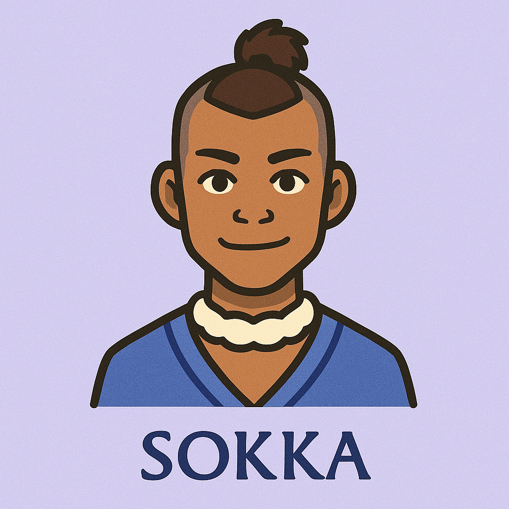

Sokka
Sharp with his sword — sharper with his sarcasm.
Sokka may not be a bender, but his quick thinking, humor, and leadership make him an essential part of Team Avatar. As the eldest of the Southern Water Tribe siblings, he takes on the role of strategist and protector with pride, often using his wit to navigate even the most dangerous situations. Though he starts out clumsy and skeptical, Sokka grows into a skilled warrior, inventor, and planner whose courage and creativity often save the day. His journey proves that strength isn’t just about power, it’s about heart, intelligence, and never giving up.